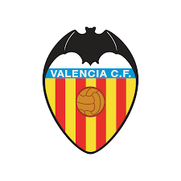

LA LIGA
La Liga es una organización global, innovadora y socialmente responsable, líder en el sector del ocio y entretenimiento. Es una asociación deportiva de carácter privado, integrada por los 20 clubes/SAD de fútbol de LaLiga Santander y los 22 de LaLiga SmartBank, responsable de la organización de las competiciones futbolísticas de carácter profesional y ámbito nacional en España.
Con sede central en Madrid (España), está presente en 41 países a través de 13 oficinas y 44 delegados.
En la temporada 2019/2020 LaLiga llegó a más de 2.800 millones de personas en todo el mundo.
| Club | Temporadas | Club | Temporadas |
|---|---|---|---|
| Deportivo Alavés | 17 | Granada Club de Fútbol | 26 |
| Athletic Club | 91 | Levante U.D | 16 |
| Atlético de Madrid | 85 | R.C.D. Mallorca | 29 |
| F.C. Barcelona | 91 | Club Atlético Osasuna | 40 |
| Real Betis Balompié | 56 | Rayo Vallecano de Madrid | 19 |
| Cádiz C.F. | 14 | Real Madrid C.F. | 91 |
| R.C. Celta de Vigo | 56 | Real Sociedad de Fútbol | 75 |
| Elche C.F. | 23 | Sevilla C.F. | 78 |
| R.C.D Espanyol | 86 | Valencia C.F. | 87 |
| Getafe C.F. | 17 | Villareal C.F. | 22 |
-

Campeón: 34
-

Campeón: 11
-
Campeón: 26
-

Campeón: 6